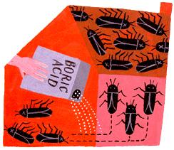

Can you suggest a safe and effective way to get rid of cockroaches in my otherwise clean apartment?
JOEL
New York, New York
Cockroaches are one of the oldest and most successful organisms on earth. They've been around some 350 million years and have survived several global catastrophes - including whatever killed the dinosaurs. Their evolutionary tenacity is directly attributable to their appetite: Roaches will eat any organic matter - from dried up wallpaper paste to fresh pizza crumbs. Our revulsion toward them seems to be as deeply ingrained as their ability to survive, and with good reason: They carry mites and disease, and their droppings rank second only to those of dust mites as a cause of asthma. Incidentally, asthma has recently been recognized as epidemic among inner-city children.
Cockroach complaints are common among New Yorkers because the underground conduits for trains, storm water and sewage, natural gas, fresh water and wiring of all types connect the city's apartment buildings. These subterranean networks also teem with several species of cockroach.
Some roaches prefer damp places, like bathrooms, and others like it dry. But all roaches are attracted by anything they find edible, so obsessive cleanliness will get you only so far. Roaches can survive, even thrive, on specks of leather that flake off your shoes and the dust that falls from natural-fiber clothes. When it comes to fighting roaches, the best offense is a strong defense: Caulk your home.
Get a $25 air-powered gun and use an air compressor ($300, or $50 a day to rent). Use 100% inorganic caulk; most brands are comprised of the same gypsum that goes into drywall board, and even cockroaches won't eat it. Avoid any brand that might contain a binder based on natural gum. You may find a caulk that contains boric acid, a mild but effective cockroach toxin.
Then, seal yourself in. Fill every crack in the walls and ceiling, between adjoining walls, walls and ceiling and floor, and around doors and windows. Also, plug up every hole carrying wires and plumbing. Remove and caulk wiring entrances of wall and ceiling electric outlets, switches and light fixtures, TV and computer cables and telephone outlets. Stuff roach- (and mouse-) repelling steel wool into cavities too large to caulk, and tack pieces of aluminum flashing or thin plywood over large holes and caulk around them. Install fine screen in a caulking gasket behind the outlet fixture of all air vents. If the apartment gets stale from insufficient air exchange, crack a bedroom window or two at the top, but screen the opening and seal up every crack inside the window casing, and blow boric acid into the cavities all around as follows.
To kill the roaches that still manage to squeeze in, get some powdered boric acid and a good dustblower (you can get preloaded plastic roach-dusters at hardware stores). Be sure the dust contains nothing but boric acid and perhaps a desiccant to keep it dry. Empty a prefilled duster bellows to no more than 2/3 full. (To keep dust in the bellows fine and airborne, include a few marbles, small rocks, washers or pennies.) Puff gently to finely coat surfaces at roach entry points. You'll also need to cover some spots that are hard for you to reach, but easy for them: Drill holes down the centers and at the corners of backs and closed floors of cabinets and puff powder in. Apply the boric acid powder so thinly that it is barely visible. Wipe it up and reapply frequently to keep it from absorbing moisture and losing effectiveness. The powder must be bone-dry so the roaches pick it up on their feet, then ingest it and die. Never apply boric acid onto countertops or other exposed surfaces, especially those used to prepare food. Any visible residues should be wiped off with a damp cloth.
Boric Acid Boric acid is a white, inorganic powder chemically derived from water and boron, which is mined from vast mineral deposits in the ground and used in consumer products such as laundry additives, toothpaste and mouthwash. Deadly to cockroaches, boric acid is low in toxicity to people and pets, and is even used as an eyewash. It is also odorless and contains no volatile solvents. Boric acid has been a favorite weapon against roaches for more than a century, and is one of the most effective cockroach control agents ever developed, provided that it is used correctly.
|
 ILLUSTRATION: LINDA HELTON Boric acid is a safe and effective solution to a pesky cockroach problem. |
|
|